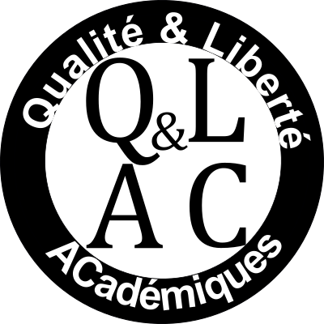

|
 |
QLAC |
Fil d'actualités
Des centaines d'employés de l'université de Strathclyde (RU) voteront pour décider d'une grève suite à l'annonce licenciements sans concertation avec les syndicats (BBC) (20/01/2026).
Projet de Charte des droits des étudiants du Conseil de l'Europe (24/07/2025).
Publication d'un rapport de l'association américaine des professeurs d'université intitulé : « Intelligence artificielle et professions académiques » (22/07/2025).
Une université révoque le diplôme d'une ancienne première dame coréenne pour plagiat. Article du site University World News (17/06/2025).
14% des résumés biomédicaux rédigés par une IA en 2024. Article du site University World News (16/06/2025).
L'essor du recrutement basé sur les compétences : ce que cela signifie pour l'enseignement supérieur. Article du site University World News (15/06/2025).
Décret n°2025-522 du 10/06/2025 fixant la liste des appels à projets de recherche et de développement technologique ouvrant droit à une demande de report de départ à la retraite des enseignants-chercheurs ou chercheurs responsables de tels appels à projets (14/06/2025).
Rapport de la Cour des comptes sur l'université d'Evry (4/06/2025).
Le texte (français/anglais) de la brève intervention de Denis Roynard, président du SAGES, à la journée internationale pour la liberté académique du 20 mai 2025 organisée par l'AFAF (21/05/2025).
Brève intervention de Denis Roynard, président du SAGES, à la journée internationale pour la liberté académique organisée par l'AFAF mardi 20/05/2025 (19/05/2025).
Rapport 2024 du Parlement européen sur la liberté académique (21/04/2025).
« Comparaisons internationales sur le doctorat : l'attractivité française avérée ». Note du SIES (MESR) (20/03/2025).
Jusqu'à 10 000 emplois d'universitaires menacés de suppression au Royaume uni. Article BBC (5/03/2025).
La non titularisation d'un enseignant-chercheur ou d'un chercheur stagiaire est difficilement contestable devant la juridiction administrative comme le montre cet arrêt du Conseil d'Etat concernant une chargée de recherche stagiaire au CNRS (21/02/2025).
« Comment les universités peuvent protéger et promouvoir la liberté académique ». Document de l'Association européenne des universités (12/02/2025).
Les cours de langues modernes menacés dans les universités britanniques par les suppressions d'emplois d'enseignants. Article du site University World News (11/02/2025).
« Les universités sont invitées à s'engager à protéger la liberté académique » article du site Research Professional (8/02/2025).
Le syndicat Eurocadres publie un rapport sur les conditions de travail des chercheurs. Entretien de la présidente d'Eurocadres sur le site Options au cœur du social (18/01/2025).
L'Université du Surrey (R.U.) a choisi de ne pas souscrire à un contrat d'abonnement avec le géant de l'édition universitaire Elsevier pour non viabilité financière. Article sur le site Research Professional News (7/01/2025).
« Pourquoi les universités doivent être neutres ». Article sur le site Newsroom. (22/12/2024).
Donald Trump a un grand projet de refonte des universités américaines. Emission audio de On the Media (en anglais) (21/12/2024).
Le personnel de l'université de Coventry menace de grève contre les suppressions de postes (BBC) (20/12/2024).
« Europe centrale : les universitaires sous surveillance » émission de France Culture (18/12/2024).
« Sauver la sciences des tentations du big data : un combat digne ». Article du site University World News (25/10/2024).
« Développez de nouvelles sources de revenus n'est pas facile pour les universités ». Article du site University World News (25/10/2024).
« La conversion des notes limite la mobilité des étudiants ». Article du site University World News (25/10/2024).
« La place des composantes dans l'université », un rapport de l'IGESR (23/10/2024).
« Plus de liberté académique conduit à davantage d'innovation ». Conclusion d'une enquête internationale de chercheurs et de l'université du Luxembourg. (12/10/2024).
« Les âges sombres du plagiat académique ». Article du site Plagiarism Today (11/10/2024).
Une universitaire de UCLA intente un recours collectif contre six grands éditeurs universitaires accusés de violer les lois antitrust et d'entraver la recherche universitaire. Un article du site Medscape (11/10/2024).
Recherche publique française: comment garantir l'indépendance face au privé? Une émission France Culture (3/10/2024).
« La censure augmente à mesure que la liberté académique diminue à Hong Kong », un article du site University World News (29/09/2024).
« Le prochain commissaire européen devrait pouvoir se concentrer uniquement sur la recherche, l'innovation et l'éducation » (Ligue européenne des universités de recherche) (12/09/2024).
« Les postdoctorants internationaux publient plus mais gagnent moins » selon une étude de la revue Elsevier et résumée par le site University Word News (9/09/2024).
"Les éditeurs scientifiques menacés par l'expansion de l'accès libre ?" un article du site Les univers du livre (4/09/2024).
« De nouveaux cadres de référence suscitent l'espoir de liberté académique », un article du site University World News (31/08/2024).
Retracer les origines de l'expression « publish or perish » (17/07/2024).
Pourquoi le leadership de Harvard promet de garder le silence sur les questions controversées (GBH News) (1/06/2024).
L'Université doit-elle prendre des positions politiques? La réponse d'un groupe de travail de l'université de Harvard (31/05/2024).
EduTalks@Conseil de l'Europe : Recherche et intégrité académique (30/05/2024).
L'espace européen de l'enseignement supérieur en 2024 : rapport de mise en œuvre du processus de Bologne (Eurydice, Commission européenne) (28/05/2024).
Collège de déontologie de l'enseignement supérieur et de la recherche : rapport d'activité 2023 (24/05/2024).
Le Conseil européen adopte une recommandation sur le renforcement de la sécurité de la recherche (24/05/2024).
Journée mondiale de la liberté académique ce 20 mai 2024 (20/05/2024).
Une enquête montre que les techniques de gestion numérique « panoptiques » nuisent à la liberté académique (13/05/2024).
La cour suprême néerlandaise a demandé à entendre un appel sur la liberté académique et le licenciement (12/05/2024).
Qu'est ce que la liberté académique ? Une vidéo de la chaîne « Academic Freedom dans Learning Design » (4/04/2024).
Depuis quand existe la liberté académique et en quoi consiste-t-elle ? Sur le site Scispace (2/04/2024).